Pose 13
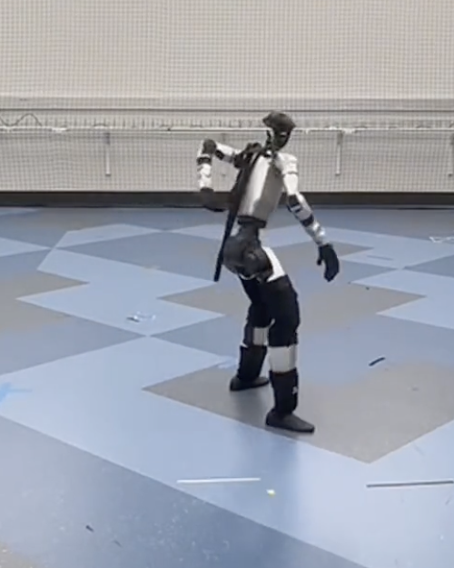
Real DROID observation
MuJoCo episode twin
Real DROID observation
MuJoCo episode twin
Real DROID observation
MuJoCo episode twin
Real-to-sim conversion for robotic interaction with objects remains labor-intensive because it requires more than visual reconstruction: a streamlined real2sim process must recover scene geometries and object states, infer physical parameters, and assemble actors, objects, cameras, poses, and trajectories into a runnable physical simulation. Today this process still depends on manual tuning of visual foundation models, mesh cleanup, coordinate-frame alignment, and brittle workflow glue across visual perception tools and simulators. We introduce Agentic Real2Sim, a framework for generalized physical world modeling with vision-language agents, converting a real-world recording of object-robot interaction into a simulatable episodic twin which preserves observations, geometries, robot interactions, and object states. We evaluate Agentic Real2Sim on rigid-object manipulation, deformable-object interaction, and humanoid motion scenes, spanning domains that are usually handled by separate Real2Sim pipelines, marking a first step toward scalable conversion. The framework's agentic decisions can be driven by an open-weight VLM backend at a small fraction of the cost of frontier models, while attaining comparable conversion success rate. We aim to use the resulting real-world-aligned twins for downstream robotics tasks, specifically policy learning and evaluation.
Explore reconstructed simulatable episode twins directly in your browser. This presentation renders each scene as an OpenUSD stage through a three.js Hydra delegate — drag to orbit, scroll to zoom, and right-drag to pan. Use the buttons below to switch between episodes.
OpenUSD stage TRI · Sample 12
The deformable adapter follows the PhysTwin/EMPM setting, replacing rigid object pose tracking with tracked geometry and point, particle, spring, or material state. Simulator rollouts check whether the recovered parameters reproduce observed deformation.
The humanoid adapter uses motion-context retrieval, embodiment-specific initialization, and closed-loop replay against retargeted reference motion. Each pair below presents a reference pose and the corresponding simulated settling transient.

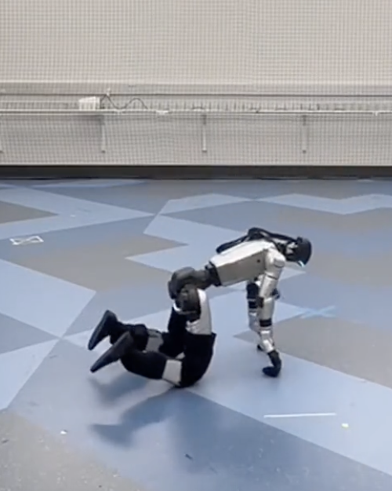
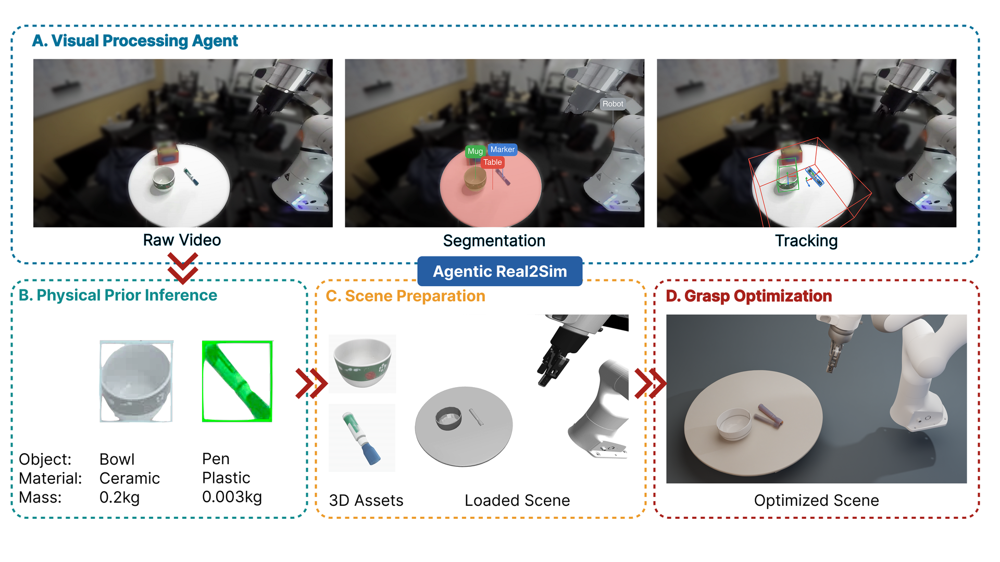
25 episodic reconstructions rendered:

We evaluate π₀.₅, pretrained on real-world DROID data, on synthetic scenes created by our pipeline. Each episode pairs the real-world demonstration (left) with policy execution rendered from the Gaussian representation (right).
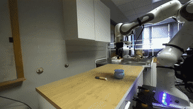
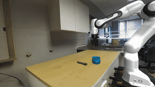
Placing an object in a blue cup
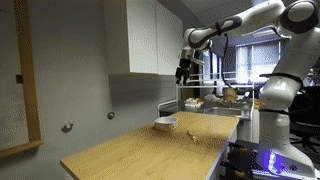
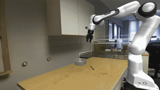
Repositioning an object on the table
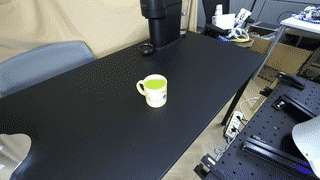
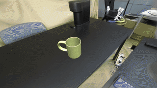
Placing an object in a mug
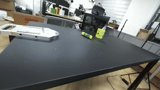
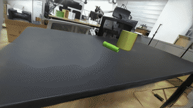
Repositioning an object on the table
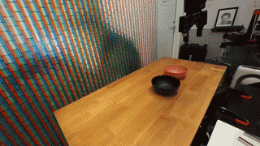
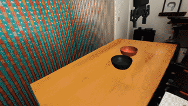
Stacking one bowl on another
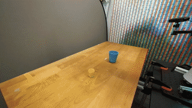
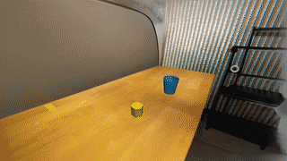
Dropping a yellow block into a blue cup
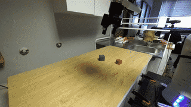
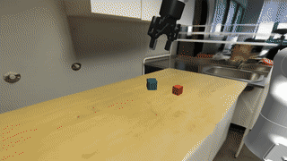
Stacking blocks in sequence
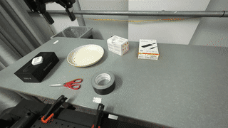
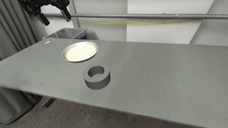
Placing an object on a plate
@misc{chen2026agenticreal2sim,
author = {Guanxiong Chen and Qianjun Xia and Jiawei Peng and Heng Zhang and Bole Ma and Justin Qian and Ziyi Jiao and Bingyang Zhou and Luoxin Ye and Kaifeng Zhang and Kunyi Wang and Weijia Zeng and Yunuo Chen and Pengzhi Yang and Ziqiu Zeng and Siyuan Luo and Huamin Wang and Chao Liu and Alan Yuille and Fan Shi and Changxi Zheng and Yunzhu Li and Chenfanfu Jiang and Peter Yichen Chen},
title = {{Agentic Real2Sim}: Physics-based World Modeling with Vision-Language Agents},
year = {2026},
month = jun,
howpublished = {Project website},
url = {https://agentic-real2sim.github.io/}
}